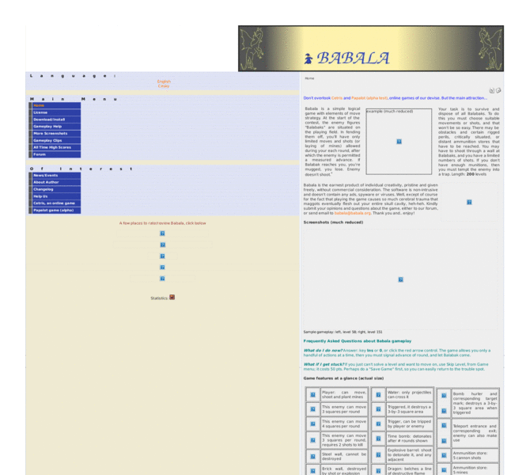

Previewing: Babala, mental aerobics --freeware Previewing: Babala, mental aerobics --freeware 
Use the left/right red arrow controls to navigate through this ring - Click the preview image to visit the member site.

Out of some high monastery comes Babala, a simple logical game with elements of move/shoot strategy. Muggers are afoot, lacking guns but deadly nonetheless. 200 expertly-crafted levels, ranging from super-easy to tearing your hair out. It's quite an ascent, a test of wits, not reflexes. There's a rigorous scoring system and Web high score posting. And try Cetris, ou
Babala, mental aerobics --freeware owned by:
 p_richter p_richter
A member of the original webring since 11/19/2005.
|
|